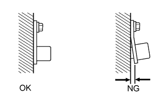

DTC P0340 Цепь датчика положения распредвала "A" (ряд 1 или отдельный датчик) |
| Режим поездки при обнаружении DTC | Условие обнаружения DTC | Неисправный участок |
| Прокрутите коленчатый вал двигателя стартером в течение 4 с (сигнал STA в состоянии ON (ВКЛ)) | Сигнал STA ON: В ЕСМ не передается сигнал датчика положения распредвала во время прокручивания коленчатого вала двигателя стартером в течение 4 с или более (логика диагностирования за 2 поездки)*1 (логика диагностирования за 1 поездку)*2. |
|
| Дайте двигателю поработать на холостом ходу в течение 1 с (сигнал STA в состоянии OFF (ВЫКЛ)) | Сигнал STA OFF: В течение 1 с выполняется одно из условий (логика диагностирования за 1 поездку):
|
| 1.ПРОВЕРЬТЕ ДАТЧИК ПОЛОЖЕНИЯ РАСПРЕДВАЛА |
Проверьте датчик положения распредвала (Нажмите здесь).
|
| ||||
| OK | |
| 2.ПРОВЕРЬТЕ ЖГУТ ПРОВОДОВ И РАЗЪЕМ (ДАТЧИК ПОЛОЖЕНИЯ РАСПРЕДВАЛА - ECM) |
Отсоедините разъем датчика положения распредвала.
Отсоедините разъем ECM.
Измерьте сопротивление в соответствии со значениями, приведенными в таблице ниже.
| Контакты для подключения диагностического прибора | Условие | Заданные условия |
| C52-1 - C92-13 (G+) | Всегда | Менее 1 Ом |
| C52-2 - C92-14 (G-) | Всегда | Менее 1 Ом |
| Контакты для подключения диагностического прибора | Условие | Заданные условия |
| C52-1 или C92-13 (G+) - масса | Всегда | 10 кОм или более |
| C52-2 или C92-14 (G-) - масса | Всегда | 10 кОм или более |
Вновь подсоедините разъем датчика положения распредвала.
Подсоедините разъем ECM.
|
| ||||
| OK | |
| 3.ПРОВЕРЬТЕ ДАТЧИК ПОЛОЖЕНИЯ РАСПРЕДВАЛА (УСТАНОВКА ДАТЧИКА) |
|  |
Проверьте монтаж датчика.
|
| ||||
| OK | |
| 4.ПРОВЕРЬТЕ ЗУБЧАТОЕ КОЛЕСО РАСПРЕДВАЛА |
Проверьте состояние зубчатого колеса распредвала.
|
| ||||
| OK | |
| 5.ЗАМЕНИТЕ ECM |
Замените ECM (Нажмите здесь).
|
| ||||
| 6.ЗАМЕНИТЕ ДАТЧИК ПОЛОЖЕНИЯ РАСПРЕДВАЛА |
Замените датчик положения распредвала (Нажмите здесь).
|
| ||||
| 7.ОТРЕМОНТИРУЙТЕ ИЛИ ЗАМЕНИТЕ ЖГУТ ПРОВОДОВ ИЛИ РАЗЪЕМ |
Отремонтируйте или замените жгут проводов или разъем.
|
| ||||
| 8.УСТАНОВИТЕ ДАТЧИК ДОЛЖНЫМ ОБРАЗОМ |
Надежно установите датчик (Нажмите здесь).
|
| ||||
| 9.ЗАМЕНИТЕ ЗУБЧАТОЕ КОЛЕСО РАСПРЕДВАЛА |
Замените зубчатое колесо распредвала (Нажмите здесь).
| ДАЛЕЕ | |
| 10.ПРОВЕРЬТЕ, УСТРАНЕНА ЛИ ДОЛЖНЫМ ОБРАЗОМ НЕИСПРАВНОСТЬ |
Подсоедините портативный диагностический прибор к DLC3.
Сбросьте коды DTC (Нажмите здесь).
Выключите зажигание и подождите не менее 30 с.
Запустите двигатель и дайте ему поработать на холостом ходу не менее 4 секунд.
Войдите в следующие меню: Powertrain / Engine and ECT / DTC.
Убедитесь, что DTC не выводится снова.
| ДАЛЕЕ | ||
| ||